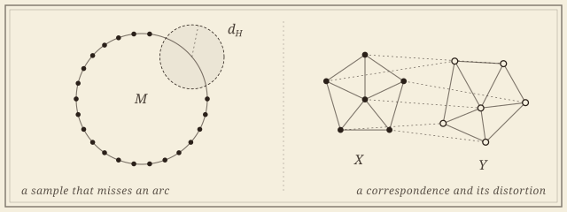
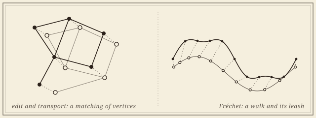

Comparing Shapes
Gromov–Hausdorff distances and the distances between geometric graphs.

Reconstruction asks whether a sample remembers its shape; comparison asks how far apart two shapes are. The Gromov–Hausdorff distance dGH measures how far two abstract metric spaces are from being isometric. It is foundational to topological data analysis and notoriously hard to compute; the work here produces lower bounds in terms of the better-behaved Hausdorff distance, and approximation algorithms with stated factors.
For shapes that are embedded graphs—road maps, molecular graphs, the bonds of a crystal, vascular and neuronal trees—the question has a sharper practical edge, and the distances proposed for it pull in different directions: some are true metrics but NP-hard, some are fast but blind to the geometry, some are stable and some are not. The recurring strategy on both fronts: replace an intractable optimization with a tractable surrogate, and prove that the surrogate cannot lie by more than a stated factor.
Hausdorff versus Gromov–Hausdorff
When a sample that misses part of a space cannot be close to it intrinsically.
For a subset X of a space M, the Gromov–Hausdorff distance never exceeds the Hausdorff distance. The question is the reverse: when does missing part of M force X to be intrinsically far from it? The answers are lower bounds for d_{GH} in terms of d_H, with constants that depend on the geometry of M.
- Lower Bounding the Gromov–Hausdorff Distance: Manifolds with Boundary. With Henry Adams, Nikola Sadovek, Žiga Virk, and Nicolò Zava. In preparation.
Extending the lower bounds from closed manifolds to manifolds with boundary. - Lower Bounding the Gromov–Hausdorff Distance in Metric Graphs. With Henry Adams, Fedor Manin, Nicolò Zava, and Žiga Virk. SoCG 2026. arXiv.
- Hausdorff vs Gromov–Hausdorff Distances. With Henry Adams, Florian Frick, and Nicholas McBride. Discrete & Computational Geometry, 2025. DOI · arXiv.
Computing the distance
Polynomial time, a constant factor, and where both stop.
Computing d_{GH} is NP-hard in general, and approximating it well is hard even for metric trees. For Euclidean point sets the geometry helps: this line gives the plane a constant factor.
- A Constant-Factor Approximation of the Gromov–Hausdorff Distance in the Plane. Preprint, 2026. arXiv.
- Approximating Gromov–Hausdorff Distance in Euclidean Space. With Jeffrey Vitter and Carola Wenk. Computational Geometry: Theory and Applications, 2024. DOI · arXiv.
An open question I am thinking about: in which dimension does the difficulty return? Whether the planar argument extends to higher dimensions, and where approximating d_{GH} for Euclidean point sets becomes hard, and within what factor, is not yet known.
Geometric graphs
An invariant says whether; a distance says how different, and with what guarantees.
The work is active, as a weekly working group with Carola Wenk and Vitaliy Kurlin, and it sits on the distance side of the question. Its first deliverable is a survey chapter that organizes the edit-, transport-, and correspondence-based distances by their metric axioms, complexity, and stability, and relates them to one another through bounds and reductions on the same pair of graphs. Around it: faster transport-based comparisons, for geometric graphs and for the distributional invariants that describe them, using modern approximate optimal transport with a stated error bound; the metric geometry of the space of embedded graphs itself; and applications, beginning with road networks, where two reconstructions of the same city never agree and the question is by how much. A student thread asks the learning version: when a graph neural network can be trained to match geometric graphs, and what it certifies when it does.

- Distances Between Geometric Graphs: A Survey of Metric and Computational Properties. An invited chapter for the AMS Contemporary Mathematics volume on Geometric Data Science. In preparation.
Edit-based, transport-based, and correspondence-based distances compared on metric axioms, complexity, and stability, with the open problems collected. - Distance Measures for Geometric Graphs. With Carola Wenk. Computational Geometry: Theory and Applications, 2024. DOI · arXiv.
The geometric edit and geometric graph distances, their metric properties, and the NP-hardness of computing them. - Graph Mover’s Distance: An Efficiently Computable Distance Measure for Geometric Graphs. Canadian Conference on Computational Geometry (CCCG), 2023. DBLP · arXiv.
A transport-based alternative, computable in polynomial time. - Metric and Path-Connectedness Properties of the Fréchet Distance for Paths and Graphs. With Erin Chambers, Brittany Fasy, Benjamin Holmgren, and Carola Wenk. Canadian Conference on Computational Geometry (CCCG), 2023. DBLP · arXiv.
- Path-Connectivity of Fréchet Spaces of Graphs. With Erin Chambers, Brittany Fasy, Benjamin Holmgren, and Carola Wenk. Computational Geometry: Young Researchers Forum, 2022.
- Distance Measures for Geometric Graphs. With Carola Wenk. Fall Workshop on Computational Geometry, 2022.
Collaborators
Topologists, geometers, and computer scientists.
- Henry Adams, University of Florida
- Žiga Virk, University of Ljubljana
- Nicolò Zava, IST Austria
- Nikola Sadovek, Carnegie Mellon University
- Carola Wenk, Tulane University
- Vitaliy Kurlin, University of Liverpool
- Fedor Manin, University of Toronto
- Florian Frick, Carnegie Mellon University
- Nicholas McBride, UC Santa Cruz
- Jeffrey Vitter, Tulane University
- Erin Chambers, University of Notre Dame
- Brittany Fasy, Montana State University
- Benjamin Holmgren